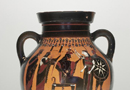
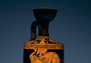
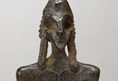
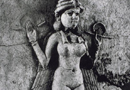
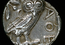

Athena
We have already seen at the beginning of the course, when we examined the Theogony of Hesiod, that Athena is one of the younger of the Olympian deities and the daughter of Zeus. Importantly, it is said that she is born only of her father, after Zeus swallowed his wife Metis. Dionysus is born from the thigh of Zeus, after he has been snapped up from the charred remains of his mother Semele. Athena instead is born out of the head of her father. (see image 1) This myth of her birth is significant, as it establishes her not only in a privileged position in relation to her father Zeus, but also as a feminine deity who is nonetheless divided from her maternal side; Athena is in many respects a very masculine woman, although she does not, as we will see, remove herself entirely from the realm of feminine activity.
{kind=link}
{kind=link}
Athena is perhaps most well known to us as a goddess of war. Her most common representation in art is with helmet and spear, accoutrements that she retained into the Roman period as Minerva. (see image 2) The first of two Homeric Hymns to the goddess, number 11, reads as follows:
‘With Pallas Athena, protectress of cities, my song begins. With that fearsome goddess who cares with Ares for warlike works – the sacking of cities, the scream of battle, the clash of the fray – and also ensures the army’s safe parting and homeward return. Farewell to you, goddess! Grant us success and prosperous life.’
Indeed, her prowess in war is well known in Homer’s Iliad, where she is frequently presented as a feminine counterpart to the male war-god Ares. Near the end of book five, we find a description of Athena arming for battle in her father’s house, a scene which is as much representative of her connection with Zeus, as it is with her association with war:
‘On her father’s threshold Athena, daughter of Zeus who drives the storm-cloud, took off the soft embroidered robe she had made and worked with her own hands, replaced it with a tunic and over that put on the armour of Zeus who marshals the clouds, in preparation for war’s work with all its tears. Then she threw round her shoulders the terrifying fringed aegis. It was encircled with Fear, Strife, Force, chilling Pursuit and the Gorgon’s head, a ghastly monster, the awe-inspiring, potent emblem of Zeus. On her head she put her double-ridged golden helment with its four plates, adorned with fighting men of a hundred towns. Then she stepped into the fiery chariot and took up the long, thick, heavy spear with which she breaks the ranks of warriors when she, the almighty Father’s child, is roused to anger.’
There is, however, another side to Athena which can be seen in the above passage, if only briefly. Homer says above that, when arming for war, Athena ‘took off the soft embroidered robe she had made and worked with her own hands.’ Her making of a robe is not just a singular event, but rather descriptive of another of her general characteristics. Apart from an association with war, mythology also makes her the teacher of crafts to men and women. She is specifically said to be the patron-goddess of carpenters at Iliad 5. 61 and 15. 412 and at Odyssey 8. 493 to have played a part in the construction of the famous wooden horse; her servant (representative of the carpenter) is also the builder of the plough in Hesiod Works and Days 430. In fact, along with Hephaestus, she is said in mythology to be the first to teach such skills to humans; we find this in both Odyssey 6.232-4 and Hesiod Works and Days 63-4. Surprisingly, though, this element is not dwelled upon in either of the Homeric Hymns to the goddess. Homeric Hymn 28 reads as follows:
‘With pallas Athena, that glorious goddess, my song begins, who is bright-eyed, rich in craft, who has an implacable heart; the virgin revered, protectress of cities, possessor of strength, Tritogenes. It was craft-filled Zeus himself who gave birth from his sacred head to her already in armour of war, golden, all-gleaming; every immortal was gripped with awe at the sight. But quickly she leaped from his deathless head to stand before Zeus who bears the aegis, and brandished her keen-tipped spear. At the might of the bright-eyed goddess great Olympos reeled in a fearsome tremor, the earth all round with a dreadful scream rang out, and the deep was stirred in a mass of seething waves. But the salt sea suddenly checked, and Hyperion’s splendid son for a long-drawn moment kept still the swift hoofs of his chariot’s team, until from her deathless shoulders Pallas Athena took off that armour fit for a god, and craft-filled Zeus rejoiced. And so farewell to you, child of aegis-bearing Zeus; but I will call to mind both you and another song.’
In this powerful description of her birth, Athena’s cleverness is implicit in her close relation to Zeus, who is often called clever (in Greek metieta; in which context we must not forget Athena’s mother Metis, whose name means wisdom, is the embodiment of craft and cleverness). This side of the goddess certainly makes her role in Homer’s Odyssey more comprehensible, where she is the patron goddess of the hero Odysseus as he makes his way home to Ithaca. Odysseus is a hero who is lauded for his cleverness and skill, and in one sense can be seen in the image of Athena. This is not entirely in contrast with Athena’s role in the Iliad, where she comes down from heaven to advise Achilles to check his anger and not lash out at Agamemnon in the assembly (she is not a goddess of war who is entirely given over to brute force and irrationality), but it is certainly the case that the Odyssey presents the goddess more as she might have been understood in peaceful times, as a goddess of civilization, victory and good council.
I mentioned above that Athena is intrinsically connected to Athens through her name. It is, however, uncertain whether she was named after the city or the city was named after her. Perhaps more probably she was named after the city, as the linguistic form of her name implies; but whatever the case, the connection is old. She is mentioned once in Linear B texts as atana potinija which means ‘mistress’ or ‘queen’ of Athens. Indeed, her origins in the Greek pantheon may lie somewhere in Minoan/Mycenaean religion; she has been connected by scholars to a shield deity of Mycenae, in whose sanctuary a fresco painting of a helmeted goddess has been found which would of course correspond to the manner in which Athena is presented in Greek art and literature. Indeed, a temple of Athena later stood on the site of the palace in Mycenae. Like most deities, however, her development cannot have been simple. Certain artistic representation of the goddess correspond in large part to some Near Eastern models, such as Syrian warrior statuettes which display helmets, shields and weapons. She can also be compared to armed goddesses in the Near East such as the armed Ishtar/Inanna, or Anat (see image 3). The birth-myth of Athena, recounted in the 28th Homeric Hymn cited above also seems to display some connection with the mythology of the Near East. Certain features of this hymn suggest the ascent sequence from the underworld which is found in Near Eastern literature. Athena, in the 28th Homeric Hymn is dressed in clothing appropriate to her power; she emerges in full armour out of the head of Zeus. Perhaps more importantly, however, the word used for Zeus ‘head’ here in Greek is ‘karenon’ which also means peaks of mountains; other accounts use the word ‘koryfe’ for Zeus’ head, another Greek word which is used of the peaks of mountains. In Near Eastern art, mountains are connected with the underworld, and female counterparts to Athena such as Ishtar are portrayed amongst mountains. Also significant is the fact that Ishtar seems to have been portrayed with owls, as Athena is (see images 4-5). In the Homeric Hymn, Athena’s birth from the head of Zeus causes the whole earth to quiver in fear. This might also be compared to the return from the underworld of the Near Eastern warrior god Ninurta, who in one text ‘returns from the mountains, thundering across the land, his chariot dressed in emblems of his might and he himself radiant with power’. It is impossible with such loose parallels to suppose any direct influence, but this is at least an example of the fact that Greek and Roman mythology do not exist in a vacuum.
{kind=link}
{kind=link}
{kind=link}
Other accounts of the birth of Athena have Hephaestus involved, as the one who splits open Zeus’ head with an axe in order to release Athena. In Pindar’s seventh Olympian Ode we hear the following that Hephaestus strikes Zeus’ head with a brass axe, upon which Athena leaps from his head. In Euripides’ tragedy Ion, the story is told with Prometheus as the god who breaks open the head with an axe. Both the presence of the axe and the gods involved in these versions of her birth are representative of Athena’s connection with the creation of mankind. In Hesiod Athena plays an important role in the creation of woman (Pandora) together with Hephaestus. Her role as member of the group responsible for the creation and advancement of the human race of course helps to explain her connection with Hephaestus as the one to teach craft to human kind.
One prominent myth that displays Athena’s role as the teacher of craft is the story of her quarrel with Arachne, told in Ovid’s Metamorphoses. Athena becomes angry with Arachne because her skill at wool making matches that of Athena herself. Arachne is therefore praised as being better than Athena:
‘Pallas disguises herself as a crone: puts on a wig of counterfeit grey hair and, with a staff to prop her tottering limbs, begins to speak: “Old age is not to be wholly despised, for with it wisdom comes. Heed my advice: seek all the fame you wish as best of mortal weavers, but admit the goddess as your superior in skill; beg her to pardon you for your presumption in an appropriately humble manner-forgiveness will be given, if you ask it.” Arachne drops the work she had begun, and scarcely able to restrain her hand, expresses outrage through her glaring eyes, cutting the goddess short with these sharp words: ‘You’ve lived too long, you senile nincompoop, that what your trouble is! Try telling that to your own daughter or your daughter in law, if you have any children; as for me, I’ll take my own advice, thanks very much.’
Athena throws off her disguise and they compete. Arachne is in fact very successful, winning the competition, but Athena strikes back at her in anger. Arachne hangs herself in order to escape the shame of the punishment, but Athena eventually takes pity and turns her into a spider.
Athena’s role as the teacher of crafts was frequently expressed in religious worship in Greece. She was known as Athena ‘Ergane’ which means Athena the Craftmaker. She is connected with both masculine and feminine crafts and offers patronage to both men and women. In Homer’s Odyssey, she appears as a help to Penelope during the long years of Odysseus’ journey, but she is first and foremost the patron of the male Odysseus; she is equally comfortable in either sphere, despite the fact that she is a virgin who shuns sexuality. And she was a goddess, following from this role in literature, who was understood as being particularly close to mankind as a helper; the famous German scholar of Greek religion Walter F. Otto called her the ‘Goddess of Nearness’. There was a proverb in the Greek world that said ‘In league with Athena set your own hand to work’. These different roles, as teacher of crafts, creator of mankind, and warrior goddess may at first seem to be in competition, but they can all be understood as united under the imposition of law and civilization.
The most famous cult of Athena is that of Athena Polias (or Athena Protectress of the City) in Athens, but she was known as a city goddess elsewhere in Greece. Interestingly, in pan-Hellenic literature of the archaic age, there is no special connection drawn between the goddess and Athens; for example, in neither of the two Homeric Hymns we looked at above is she connected with Athens. She is connected with the protection of the city and its internal justice and smooth running. Here in Athens she is a protectress and a civilizing goddess.